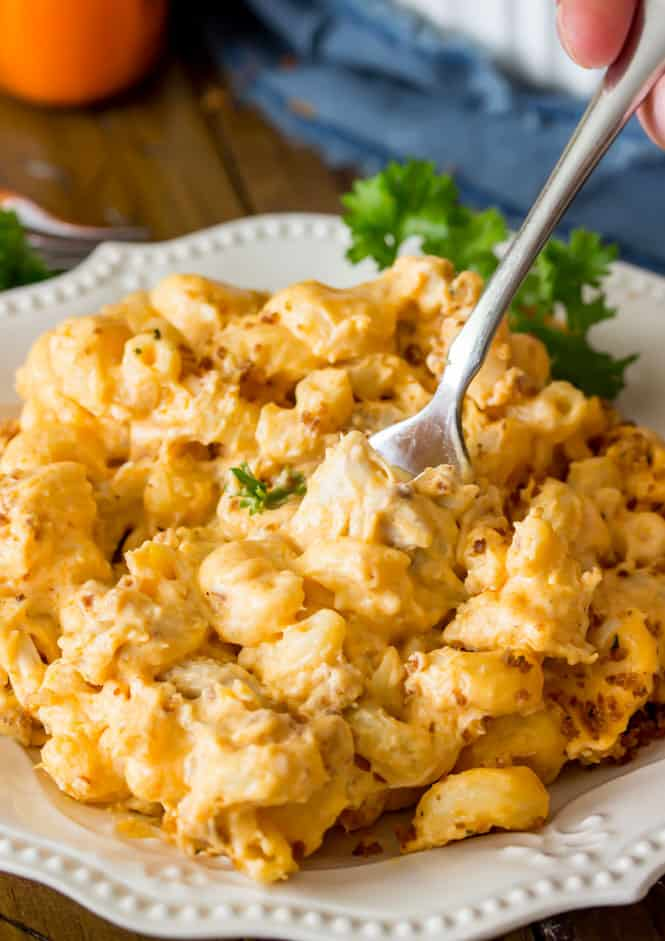

Buffalo Chicken Mac and Cheese

Description
I love buffalo chicken wings, but I find them incredibly unfilling. This recipe gets you that same flavor, in a form that will stick to your ribs. Plus, you might find that you have more than enough to enjoy leftovers from this for some easy lunches. I usually double this recpie and cook it in a 9x13 baking dish.
Ingredients
- 8 oz dry macaroni noodles
- 3 Tablespoons butter
- 3 Tablespoons flour
- 2 cups milk
- 1/2 teaspoon salt
- 1/2 teaspoon pepper
- 1/2 teaspoon garlic powder
- 1/2 teaspoon onion powder
- 4 oz cream cheese
- 1 1/2 cup shredded mozzarella cheese
- 1 cup sharp shredded cheddar cheese
- 1/3 cup sour cream
- 1/2 cup buffalo hot sauce
- 1 1/2 cups shredded chicken
- 1 Tablespoon butter
- 1/2 Tablespoon olive oil
- 1/2 cup seasoned panko crumbs
Steps
- Preheat oven to 350F and lightly grease a 9×9 square baking dish with butter.
- Cook pasta al dente according to package instructions.
- Meanwhile, melt butter in a large pot over medium heat. Once it has melted, add flour and stir until smooth.
- Add milk and spices, stir well and bring to a boil.
- Once mixture begins to boil, reduce heat, bring to a simmer, and stir frequently until it is slightly thickened.
- Reduce heat to low and add cream cheese, mozzarella cheese, cheddar cheese, and sour cream. Stir until cheeses are melted and mixture is smooth.
- Add hot sauce and stir.
- Add shredded chicken and cooked, drained pasta noodles and stir until well coated by the sauce.
- Pour into prepared baking dish and prepare your Panko topping.
- Combine butter and olive oil in a small saucepan over medium heat. Heat, stirring occasionally, until melted.
- Add panko and stir well until the butter and oil has been mostly absorbed. Continue to stir until panko is lightly toasted and turns a light-medium brown color.
- Use a spoon to sprinkle over prepared buffalo chicken mac and cheese.
- Transfer to oven and bake on 350F for 15 minutes.